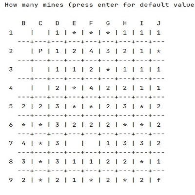

Minesweeper
Minesweeper meu primeiro jogo, foi um projeto feito na cadeira de fundamentos de Programação.
Não te Constipes

Minesweeper meu primeiro jogo, foi um projeto feito na cadeira de fundamentos de Programação.
Deisiflix

Descrição do projeto 2.
Deisi Jungle

"É um jogo de aventura e competição, ambientado em uma savana distante. Os animais da selva decidem realizar uma série de provas esportivas para determinar quem será coroado como o Rei da Selva. O protagonista, Tarzan, fica sabendo dessa competição e decide participar, confiante em suas habilidades atléticas.
Máquina de Lavar Roupa

Descrição do projeto 2.